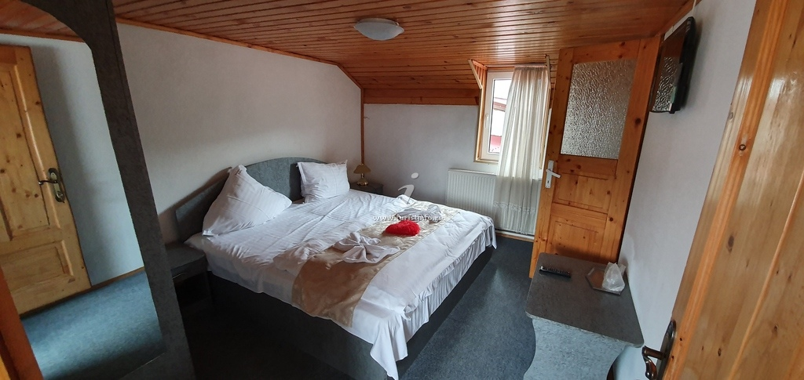
Cameră dublă
Căldura lemnului
Cameră matrimonială de 15 m², cu tavan din lemn de brad și o atmosferă caldă, de munte.
Baie proprieTV cabluWiFi
Pensiune de munte · Șimon, Bran
La 2 km de Castelul Bran, ferită de zgomotul șoselei, Pensiunea Gabriela te așteaptă cu 11 camere primitoare și o grădină de 4500 m² cu foișor, terase, piscină și vedere spre munte.
Despre pensiune
O gazdă primitoare, o grădină întinsă și liniștea satului Șimon — la doi pași de Bran.
Pensiunea Gabriela se află pe strada Podul Șimon, retrasă de la drum, într-o zonă splendidă cu vedere spre Masivul Bucegi și Piatra Craiului. Poziția liniștită, departe de trafic și zgomot, o face potrivită pentru familii, grupuri de prieteni și pentru cei care caută un răgaz adevărat la munte.
Sub același acoperiș găsești cazare în 11 camere îngrijite, o sală de mese generoasă și o sală de conferințe pentru training și team-building. Curtea de 4500 m² este inima locului: foișor cu grătar, terase, șezlonguri, leagăn, tobogan și piscină, ideale pentru relaxare și joacă.
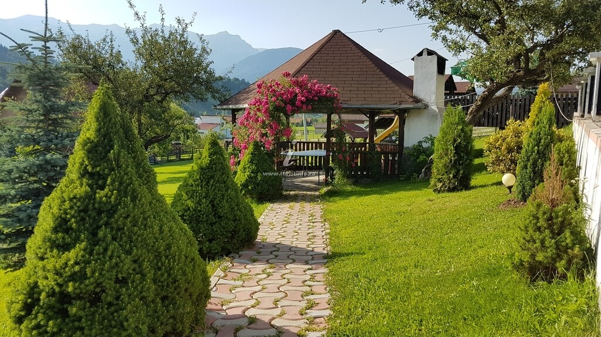
Ce găsești la noi
Tot ce ai nevoie pentru un sejur tihnit la munte — de la camere calde până la o grădină în care copiii se pot juca în voie.
Internet wireless în toate camerele și în spațiile comune ale pensiunii.
Camere calde tot anul, cu apă caldă non-stop și baie proprie în fiecare cameră.
Foișor cu grătar, trei terase, șezlonguri, leagăn, tobogan și piscină.
Sală de mese de 75 m², spațioasă și primitoare, pentru micul dejun și mese în grup.
Spațiu de 40 de locuri pentru training și team-building, chiar în inima naturii.
Priveliști spre Piatra Craiului și Bucegi, direct din curte și de pe terase.
Cazare
Unsprezece camere îngrijite, de la duble matrimoniale la apartamente pentru familii, fiecare cu baie proprie, TV cablu, WiFi și încălzire centrală.

Cameră matrimonială de 15 m², cu tavan din lemn de brad și o atmosferă caldă, de munte.
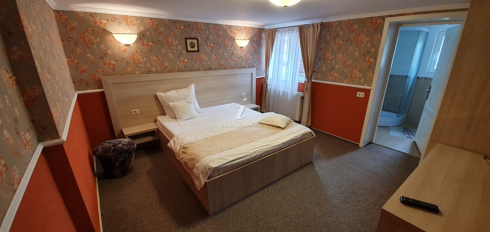
Cameră dublă superioară de 15 m², cu baie proprie modernă și lumină generoasă.
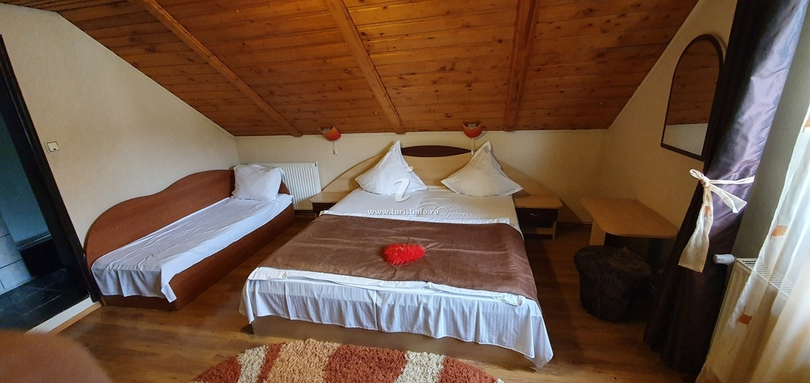
Cameră de 15 m² cu pat matrimonial și pat suplimentar, potrivită pentru trei persoane.
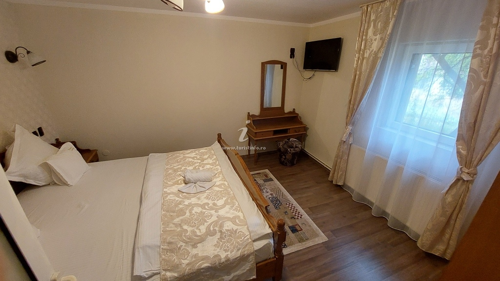
Cameră spațioasă de 20 m², cu paturi pentru patru persoane și mult loc de mișcare.
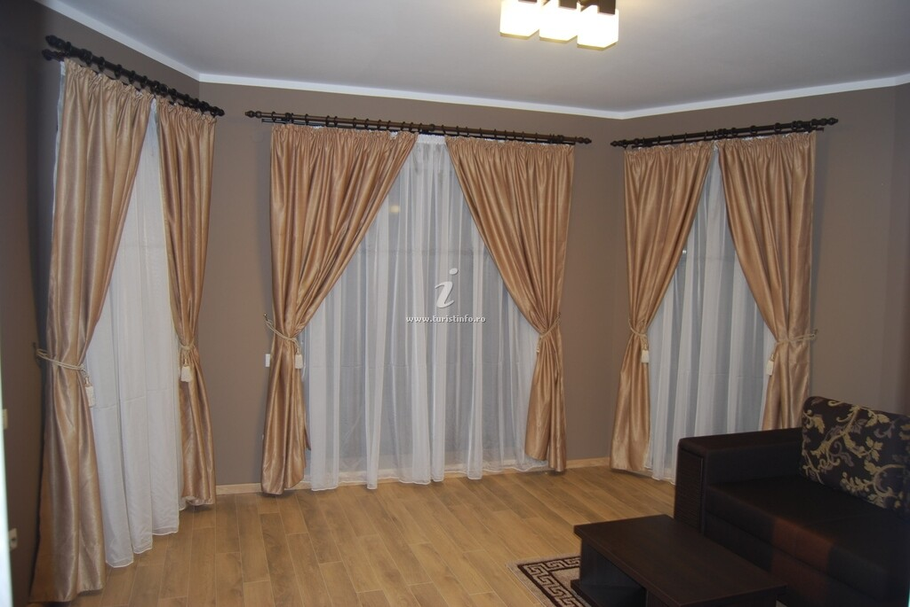
Apartament de 20 m² cu zonă de living, pentru mai mult spațiu și intimitate.
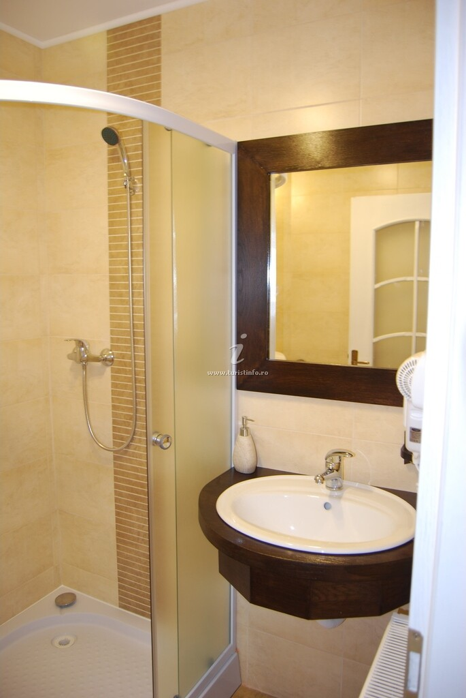
Fiecare cameră are baie proprie cu duș, apă caldă non-stop și tot ce trebuie pentru un sejur comod.
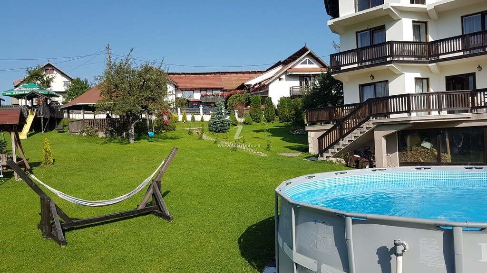
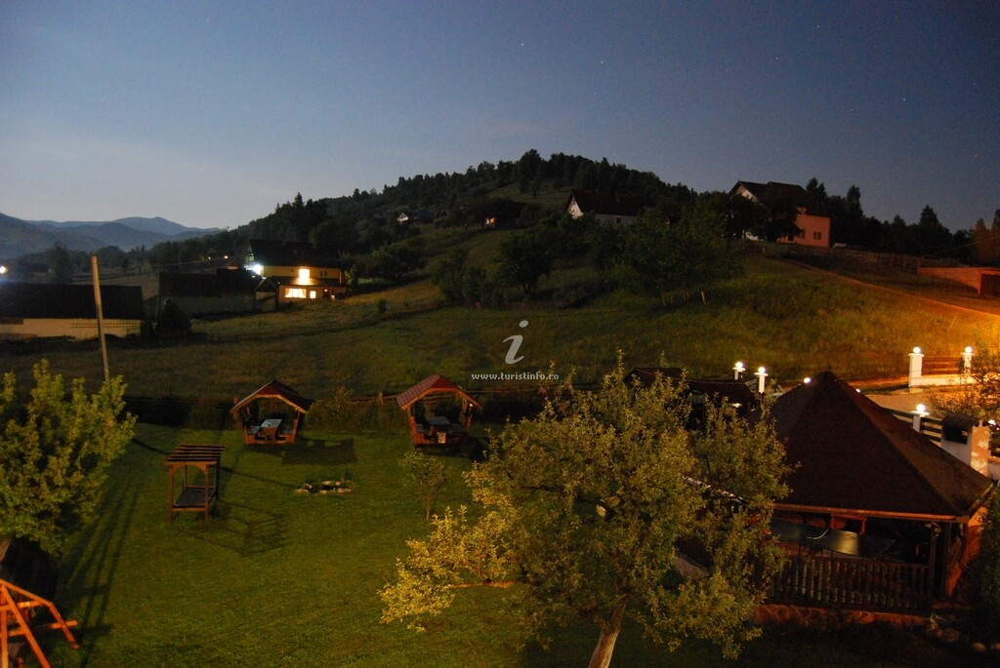
Grădina de 4500 m²
Grădina generoasă este locul preferat al oaspeților: foișor cu grătar, trei terase, șezlonguri și hamac pentru zilele de vară, plus piscină, leagăn și tobogan pentru cei mici. Un spațiu întins, verde și liniștit, bun pentru o cafea de dimineață sau o seară în jurul grătarului.
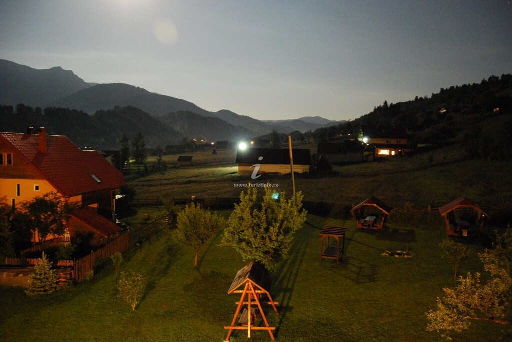
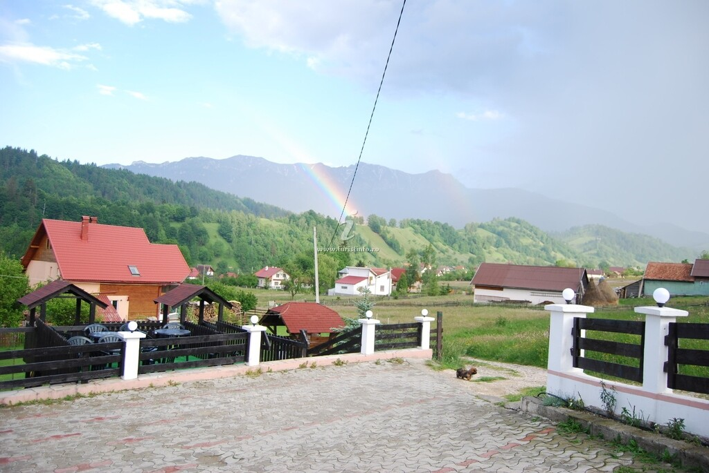
Priveliști & liniște
Satul Șimon stă la poalele munților, iar de la pensiune se deschid priveliști spre Piatra Craiului și Bucegi — la răsărit, la apus și după ploaie, când peste creste apare curcubeul. Aici, la doar 2 km de Castelul Bran, muzica tare și zgomotul lipsesc din peisaj (doar muzică ambientală), ca liniștea locului să rămână întreagă.
Împrejurimi
De la pensiune pornești ușor spre cele mai frumoase locuri din jurul Branului și Moeciului.
Legendarul castel al Branului, la doar câteva minute de mers de pensiune.
O peșteră spectaculoasă din împrejurimi, potrivită pentru o drumeție de zi.
O cascadă răcoroasă, ascunsă în natura din apropierea satului.
Cetatea țărănească de pe deal, cu panoramă largă peste Țara Bârsei.
Galerie
Clădirea, camerele, grădina și priveliștile — imagini reale de la Pensiunea Gabriela.
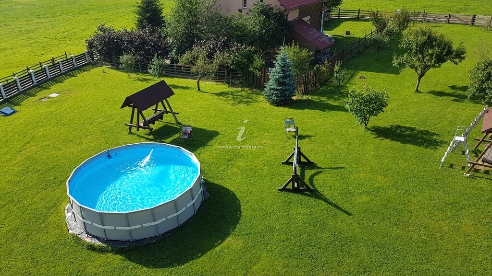
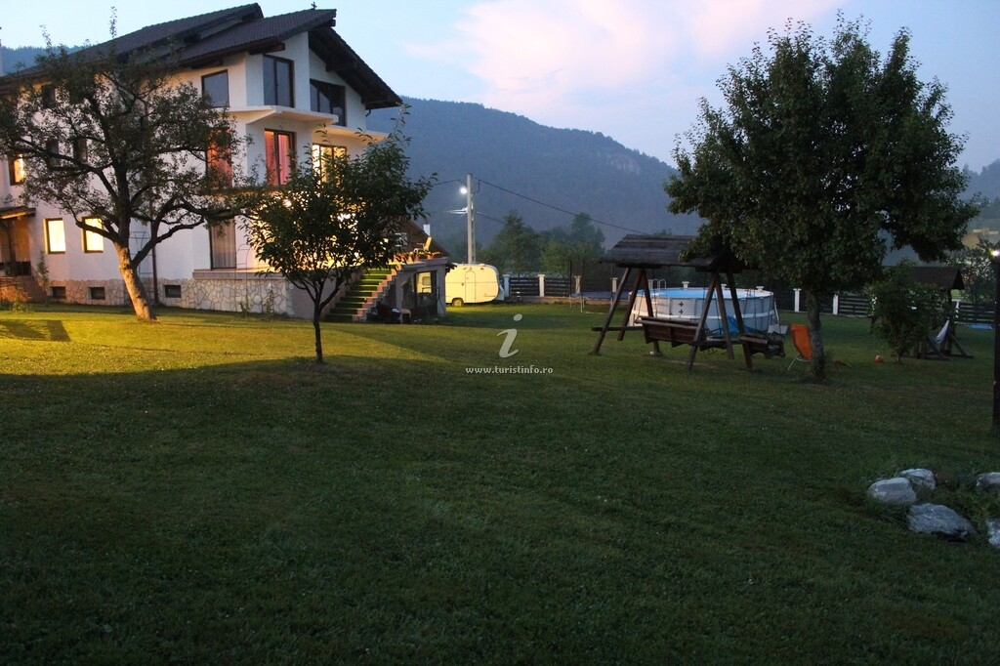
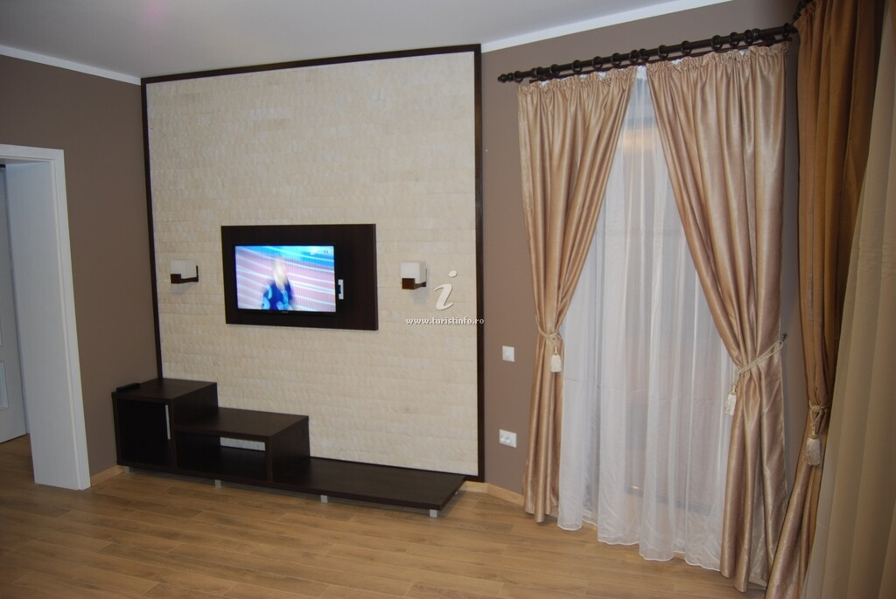
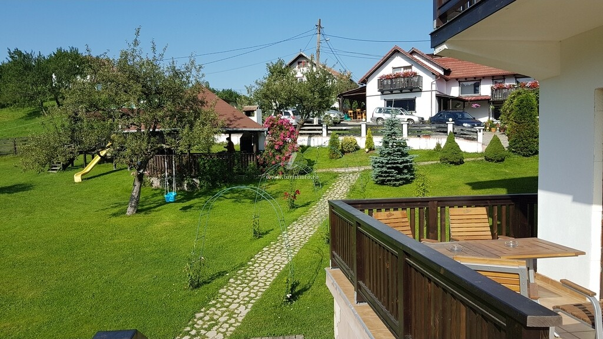
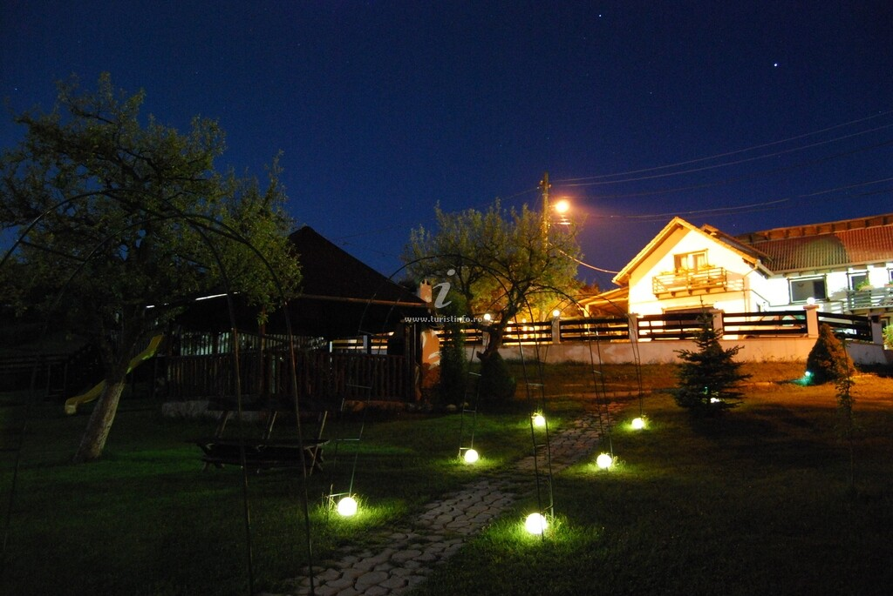
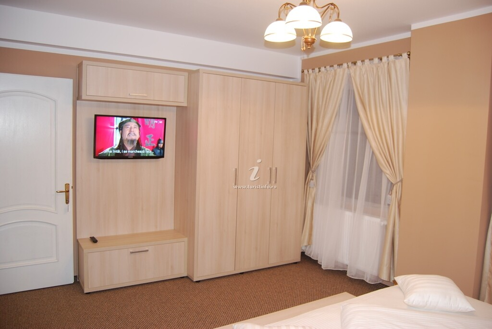
Rezervări
Sună-ne pentru disponibilitate și tarife. Rezervările se fac direct la proprietar, iar plata cu tichete de vacanță este acceptată.
Contact & locație
Str. Podul Șimon nr. 28, satul Șimon, comuna Bran, județul Brașov — la 2 km de Castelul Bran.